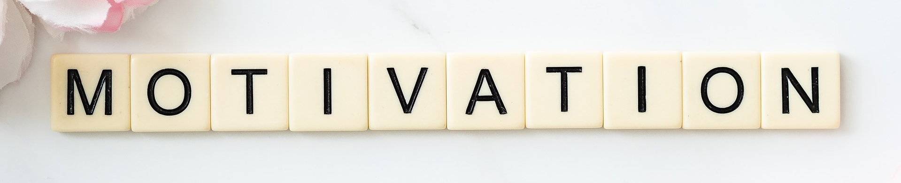

Mes Projets
Mes Projets
Mes ambitions pour Alex'ception
Mes ambitions
Aujourd'hui j'ai des ambitions bien précises dans mon esprit mais je reste consciente que tout ne se passe pas toujours comme on le souhaiterai... J'aimerai vraiment développer Alex'ception dans les années à venir, en faire une marque et devenir une référence dans la communication digitale sur les divers médias sociaux du web. Je rêve que d'ici dix ans Alex'ception possède ses bureaux en France, ait environ dix employés, réalise un bons chiffres d'affaires et que le travail fourni soit toujours aussi satisfaisant pour nos clients. J'ai de l'ambition et aimerai vraiment réaliser ce rêve. Cependant je ne veux pas me lancer tout de suite dans le développement de mon entreprise, car dans un premier temps je souhaite obtenir mon DUT MMI, et poursuivre mes études encore quelques années,de manière à avoir des connaissances solides.

Mon avenir
Malgré toutes ces idées en tête, je n'ai encore concrètement défini mon projet d'études. La seule chose concrète actuellement pour mon futur est la présence d'Alex'ception cependant je ne sais pas encore vers quelle poursuite d'études je vais me diriger et je ne sais pas non plus dans quelle voie je souhaite évoluer.